Arch 1 x 12 x 5 with Curved Top
61846184.dat · 240 × 124 × 20 LDU
Inspect sourceActual library geometry. Each view is fitted independently: compare the listed dimensions, not image size. Bounds include studs and decoration; they are not stacking heights.
61846184.dat · 240 × 124 × 20 LDU
Inspect source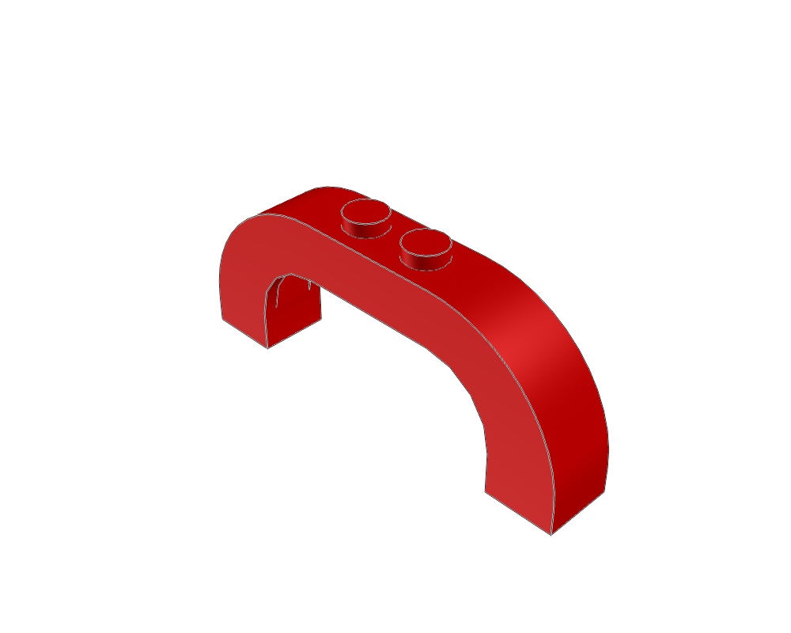
61836183.dat · 120 × 52 × 20 LDU
Inspect source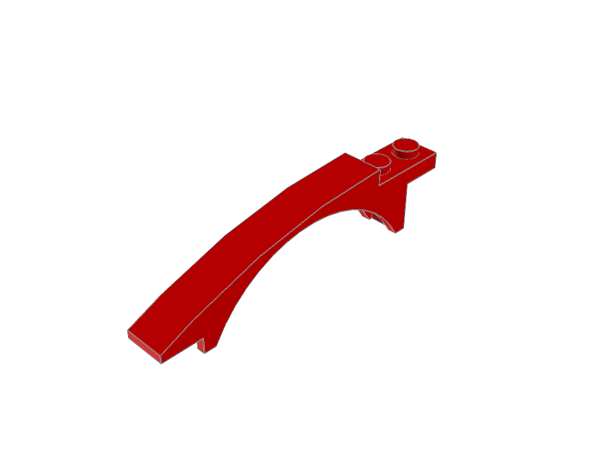
5096750967.dat · 20 × 40 × 160 LDU
Inspect source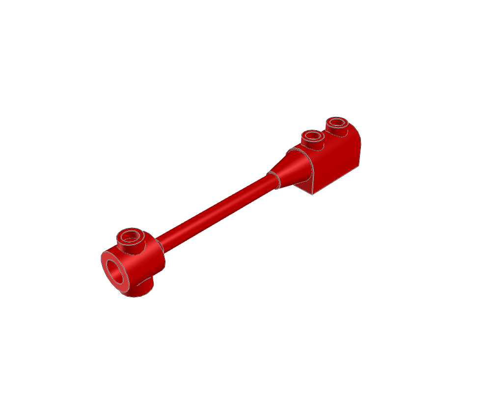
30359b30359b.dat · 20 × 28 × 160 LDU
Inspect source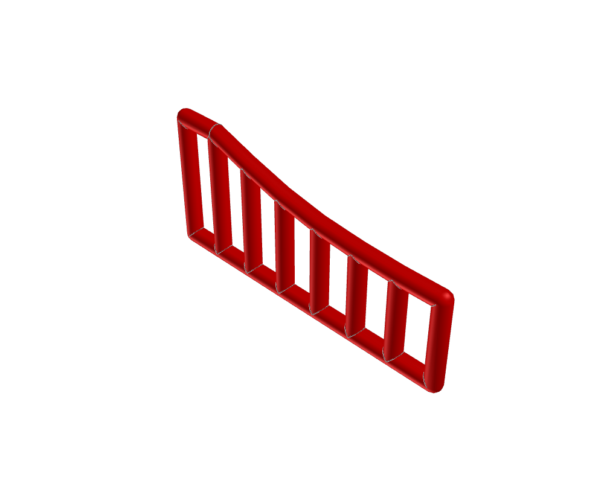
9522995229.dat · 148 × 68 × 8 LDU
Inspect source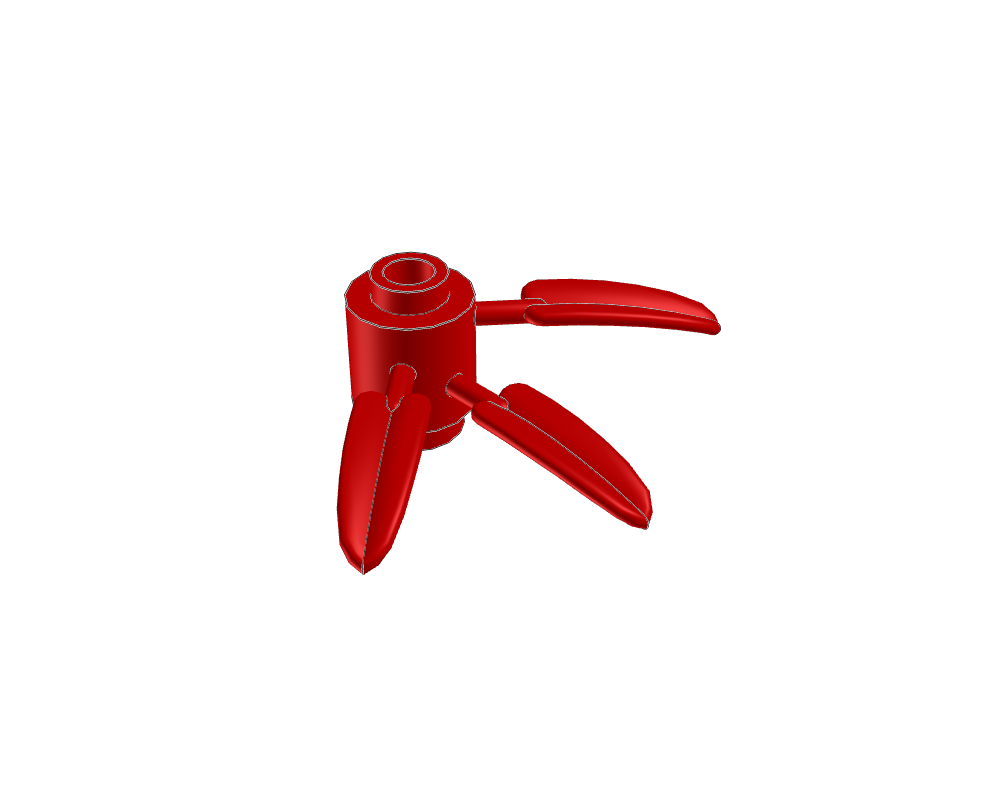
3017630176.dat · 58.88 × 28 × 76.0225 LDU
Inspect source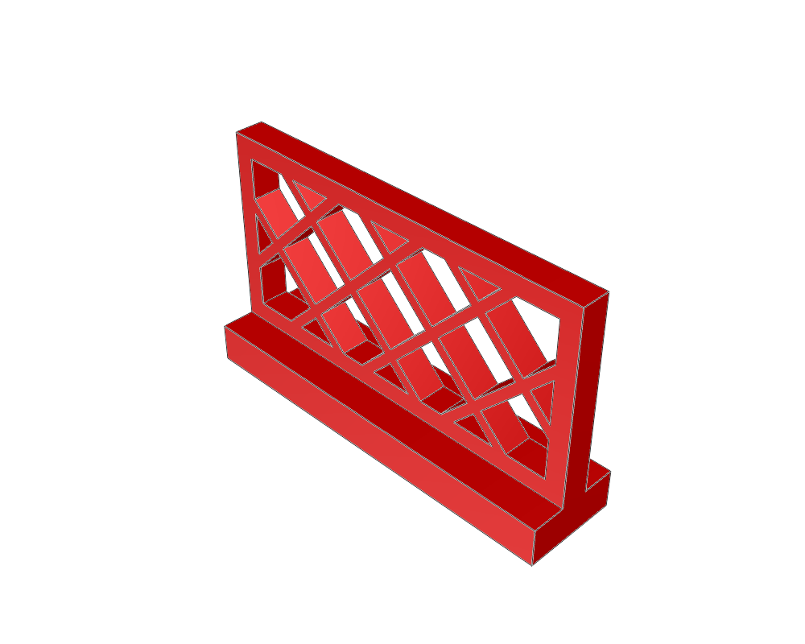
31853185.dat · 80 × 48 × 20 LDU
Inspect source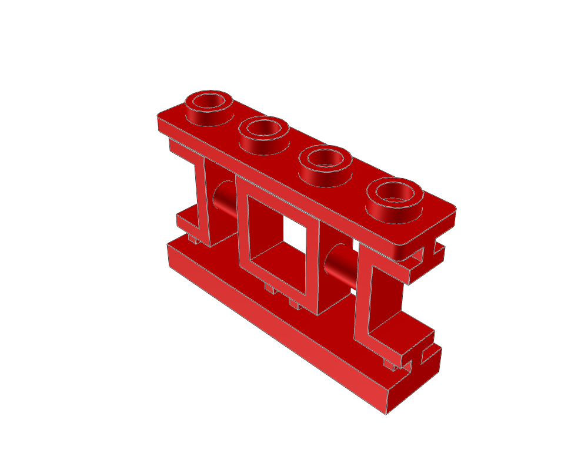
3293232932.dat · 80 × 52 × 20 LDU
Inspect source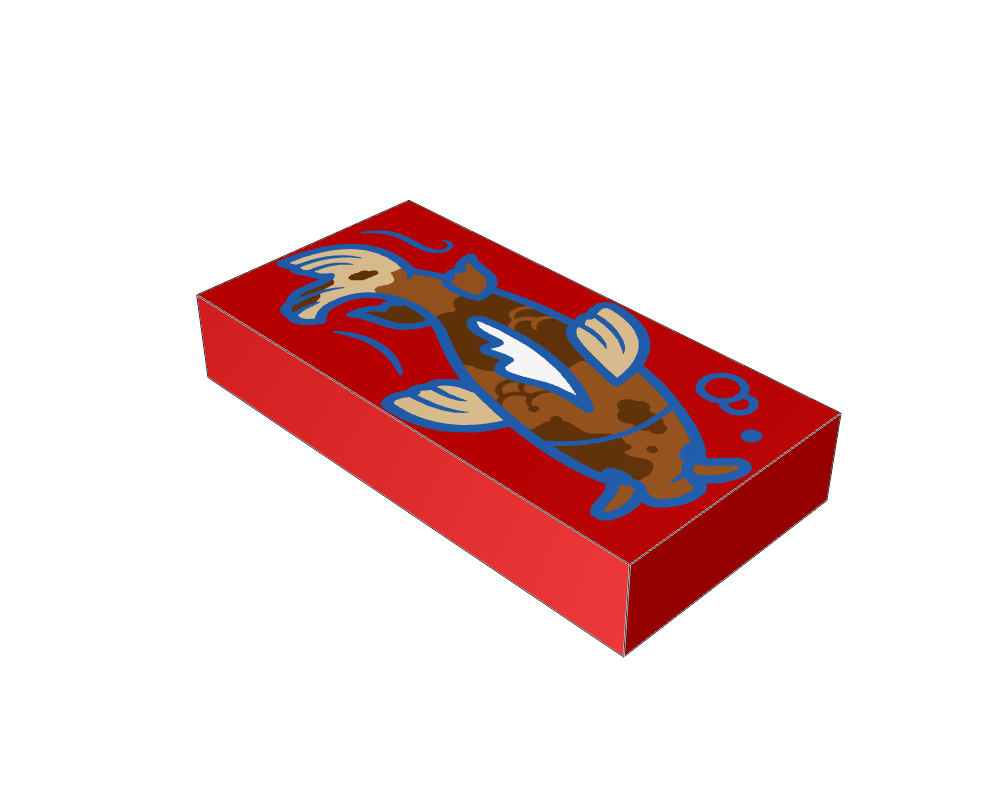
3069bp0p3069bp0p.dat · 40 × 8 × 20 LDU
Inspect source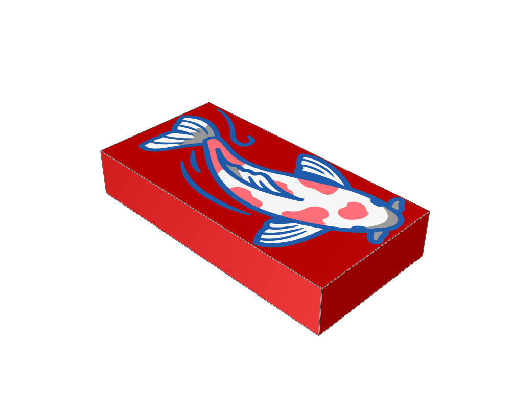
3069bp0q3069bp0q.dat · 40 × 8 × 20 LDU
Inspect source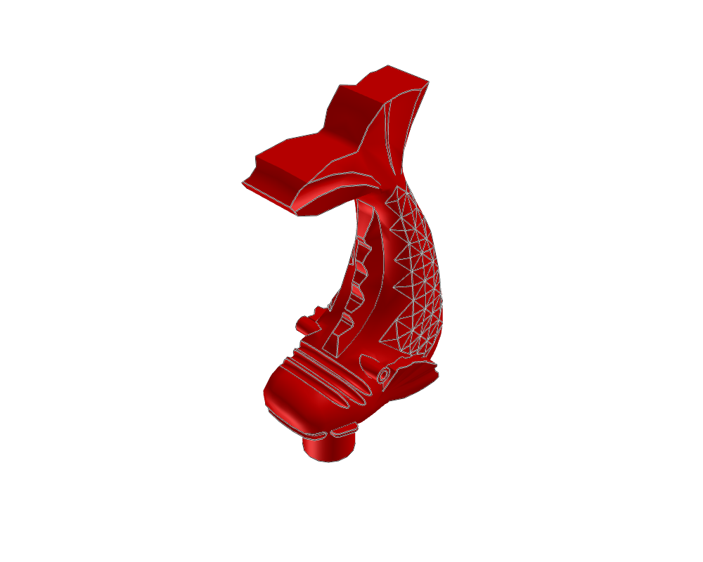
3022430224.dat · 19.76 × 55.76 × 29.141 LDU
Inspect source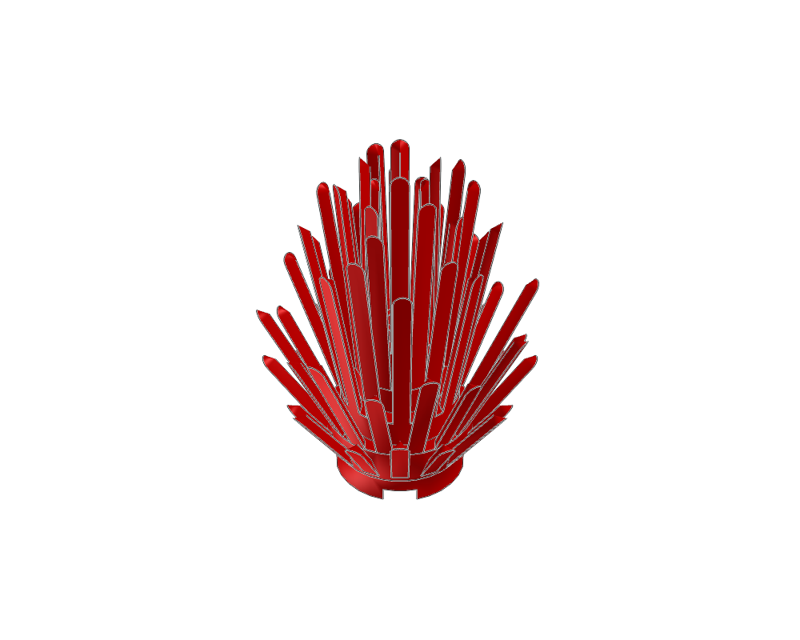
6064b6064b.dat · 80.75 × 104 × 80.75 LDU
Inspect source